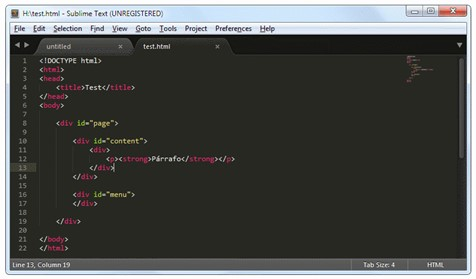
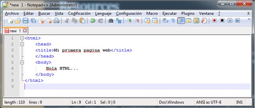
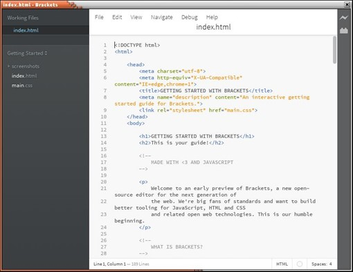
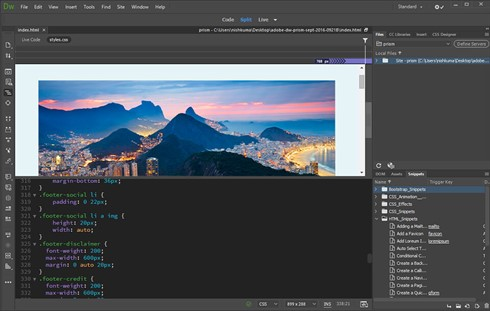
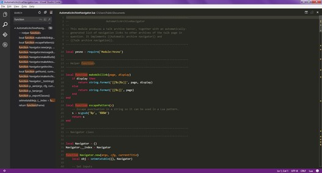
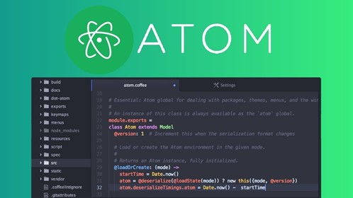
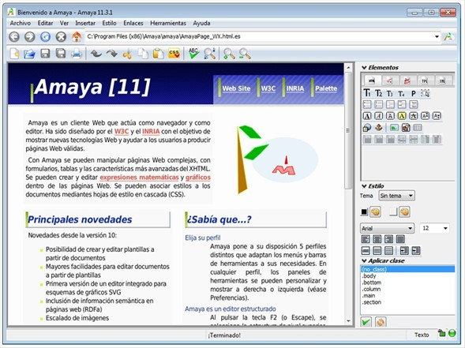
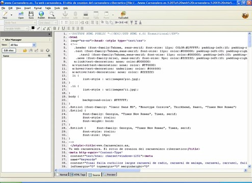
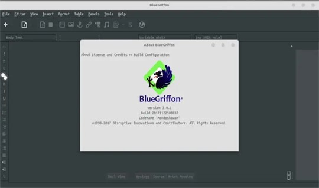
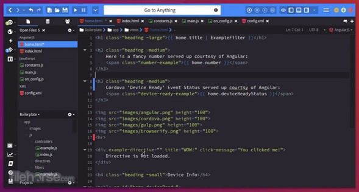

Caracteristicas:
Sublime Text es un editor de Texto para escribir código en casi
cualquier formato de archivo. Está especialmente pensado para
escribir sin distracciones. Esto quiere decir que visualmente
ofrece un entorno oscuro donde las líneas de código que escribas
resaltarán para que puedas centrarte exclusivamente en ellas.
Es un IDE de pago, pero tiene una versión de evaluación operativa
sin fecha límite.
Es totalmente configurable, pero si queremos una configuración
avanzada es un poco difícil de hacer para usuarios novatos.
No es gratuito, aunque vale la pena. Si no lo tenemos registrado,
no pierde ninguna funcionalidad, aunque aparece un mensaje de compra
cada cierto tiempo al grabar un archivo.
Area de trabajo:

Lenguajes que soporta:
C, C++, C#, CSS, D, Erlang, HTML, Groovy, Haskell, HTML,
Java, JavaScript, LaTeX, Lisp, Lua, Markdown, Matlab, OCaml,
Perl, PHP, Python, R, Ruby, SQL, TCL, Textile and XML
Versiones:
Sublime Tex 2.0, 2.0.2, 3.0.3, 3.1.1 y la última versión estable
es la 3.2.2, liberada el 1 de octubre de 2019.
URL:
Sublime text
Ventajas:
Muy liviano, fácil de instalar y tiene una versión portable.
Resalta todo tipo de lenguaje con colores para visualmente detectar
fallos a simple vista.
Para aprender es una buena opción, porque te ayuda pero no te lo
da todo hecho.
Funciona tanto en Windows como en Mac y Linux.
Volver al Inicio
Caracteristicas:
Coloreado y envoltura de sintaxis: si se escribe en un lenguaje
de programación o marcado, Notepad++ es capaz de resaltar las
expresiones propias de la sintaxis de ese lenguaje para facilitar
su lectura.
Pestañas: al igual que en muchos navegadores, se pueden abrir
varios documentos y organizarlos en pestañas.
Resaltado de paréntesis e indentación: cuando el usuario coloca
el cursor en un paréntesis, Notepad++ resalta este y el paréntesis
correspondiente de cierre o apertura. También funciona con corchetes
y llaves.
Grabación y reproducción de macros.
Soporte de extensiones: incluye algunas por defecto.
Area de trabajo:

Lenguajes que soporta:
ActionScript, ADA, asp, Assembly, autoIt, bash, Batch, C, C++, C#,
Caml, CmakeFile, Cobol, CSS, D, DIFF, Flash ActionScript, Fortran,
Gui4CLI, Haskell, HTML, ini file, InnoSetup, Java, Javascript, JSP,
KiXtart, LISP, Lua, Makefile, Matlab, NSIS, Objective-C, PHP, Pascal,
Perl, php, PowerShell, Postscript, Properties file, Python, R, RC,
Ruby, Scheme, Shell, Smalltalk, SQL, TCL, TeX, Visual Basic / Visual Basic Script,
Verilog, VHDL, XML y YAML.
Versiones:
URL:
Notepad++
Ventajas:
Reconoce las etiquetas y nos marca el principio, fin y elementos
singulares de las mismas cuando nos posicionamos con el cursor
encima de ellas. En Html, Php, etc. resulta muy útil localizar
visualmente dónde comienza y dónde termina una etiqueta. Esto es
muy fácil con Notepad++.
Permite abrir prácticamente todo: archivos con cualquier extensión,
e incluso sin extensión. Si Notepad++ no lo abre es que el archivo
está corrupto o no es editable.
Nos indica los números de línea.
Nos permite trabajar con múltiples archivos abiertos en diferentes
pestañas pero en una sola ventana. Con el bloc de notas
necesitaríamos por el contrario numerosas ventanas.
Permite todas las funcionalidades habituales en Windows: copiar y
pegar, zoom con iconos, efecto zoom usando CTRL+rueda del ratón,
buscar, reemplazar, posibilidad de deshacer, mostrar caracteres
ocultos (como saltos de línea…).
Volver al Inicio
Caracteristicas:
Editor de código HTML, CSS y JavaScript.
Función Quick Edition que permite la edición de estilos sobre el
mismo elemento.
Live Free Preview que refresca el navegador para ver el resultado
del código en tiempo real.
Programado utilizando HTML, CSS y JavaScript.
Posibilidad de extender y personalizar el editor así como
contribuir al proyecto.
Gestor de extensiones.
Interfaz muy limpia y minimalista.
Area de trabajo:

Lenguajes que soporta:
HTML, CSS y JavaScript
Versiones:
Brackets 1.14, 1.13. 1.12, 1.11. 1.10, 1.8 y 1.7
URL:
Brackets
Ventajas:
Está completamente en español y soporta otros 24 idiomas por el
momento.
Es de código abierto y está disponible en GitHub el código fuente.
Es un editor totalmente gratuito y sin coste alguno para el usuario.
Es multiplataforma. Está disponible para Windows, Linux y Mac OS X.
La versión de Linux tiene un desarrollo más lento que la versión
para Windows.
Autocompletado de texto. Cómo buen editor para aplicaciones web
soporta autocompletado para HTML, CSS y Javascript.
Tiene un desarrollo muy activo y cada mes o mes y medio sale una
versión nueva con corrección de bugs o nuevas características.
Este es un punto importante ya que el editor seguirá evolucionando
para dar mejores prestaciones a los programadores.
Volver al Inicio
Caracteristicas:
Dreamweaver te permite escribir código en todos los lenguajes de
programación importantes.
Soporta modos de editor textual y WYSIWYG.
Totalmente integrado con el ecosistema de software de Adobe.
Increíble rendimiento y soporte de Adobe Inc.
Dreamweaver, al igual que otros editores de HTML, edita los archivos
localmente y luego los carga en el servidor web mediante FTP , SFTP o
WebDAV . Dreamweaver CS4 es compatible con el sistema de control de
versiones Subversion (SVN).
Area de trabajo:

Lenguajes que soporta:
ActionScript, Active Server Pages (ASP), C#, Hojas de estilo en cascada (CSS),
Coldfusion, Lenguaje de marcado de hipertexto extensible (XHTML) ,
Lenguaje de marcado extensible (XML), Transformaciones de
lenguaje de hojas de estilo extensibles (XSLT),
Lenguaje de marcado de hipertexto (HTML), Java, JavaScript, PHP,
Visual Basic (VB) ,Visual Basic Script (VBScript) y Lenguaje de marcado inalámbrico (WML).
Versiones:
Macromedia: 1.0, 2.0, 3.0, 4.0, 6.0, 7.0, 8.0, 9.0, 10.0, 11.0 y 11.5
Adobe: 12.0, 13.0, 14.0, 15.0, 16.0, 17.0, 18.0 y 19.0
URL:
Dreamweaver
Ventajas:
Es muy bueno para trabajos profesionales.
Destaca su soporte de los estándares del World Wide Web Consortium.
Utiliza la tecnología web como CSS y Java Script.
Se puede diseñar y crear páginas web sin conocimiento de código HTML.
Permite previsualizar las páginas web en casi todos los navegadores web.
Permite el uso de extinciones como HTML y Java Script.
Lo puede utilizar cualquier usuario para crear webs sin ser profesional.
Permite el uso de extensiones, que son pequeños programas que
cualquier usuario puede escribir, descargar e instalar, ofreciendo
funcionalidades añadidas a la aplicación.
Los archivos del programa son rutinas de Javascript y hace que
sea un programa fluido.
Está disponible para MAC, Windows y también se puede ejecutar
en otras plataformas.
Nos permite ver los cambios que efectuamos a la vez que los
realizamos.
Volver al Inicio
Caracteristicas:
El código combina la interfaz de usuario optimizada de un editor
moderno con asistencia y navegación de código enriquecido y una
experiencia de depuración integrada, sin la necesidad de un IDE completo.
Visual Studio Code, cuenta con herramientas de Debug hasta opciones
para actualización en tiempo real de nuestro código en la vista
del navegador y compilación en vivo de los lenguajes que lo
requieran (por ejemplo en el caso de SASS a CSS). Además de las
extensiones, tendremos la posibilidad de optar por otros themes
o bien configurarlo a nuestro gusto. Para modificar el esquema de
colores y los iconos.
Area de trabajo:

Lenguajes que soporta:
C++, C#, Visual Basic .NET, F#, Java, Python, Ruby, HTML y PHP
Versiones:
URL:
Visual Studio
Ventajas:
Visual Studio Code es una herramienta que tiene soporte nativo
para gran variedad de lenguajes, entre ellos podemos destacar
los principales del desarrollo Web: HTML, CSS, y JavaScript,
entre otros.
Posibilidad de configurar la interfaz a nuestro gusto. De esta
forma, podremos tener más de un código visible al mismo tiempo,
las carpetas de nuestro proyecto y también acceso a la terminal o
un detalle de problemas, entre otras posibilidades.
Existencia de una amplísima gama de temas o estilos visuales para
Visual Studio Code, que hacen el trabajo con el software más
agradable a la vista.
Goza de un soporte técnico formidable pues debido a su frecuente
uso por la comunidad de desarrolladores, se puede encontrar
fácilmente documentación y ayuda en foros y sitios relacionados.
Volver al Inicio
Caracteristicas:
Integración con Git: Atom ha sido desarrollado por miembros de
la plataforma GitHub, y esto se nota a la hora de trabajar con él.
Nuestro proyecto de Atom se sincronizará automàticamente con el
repositorio de Git y veremos en todo momento si se encuentra en la
misma versión que nuestro repositorio o en qué documentos hay
divergencias.
Personalización: Atom dispone de un documento totalmente editable
donde podemos ajustar el estilo de trabajo a nuestras más
detalladas preferencias. Desde "convertir las tabulaciones
en espacios" y viceversa hasta "guardar automáticamente al
perder el enfoque en el archivo".
Area de trabajo:

Lenguajes que soporta:
HTML, CSS, Less, Sass, GitHub, C/C++, C#, Va, Java,
Objetivo-C, Javascript, JSON, CoffeeScript, Python, PHP, Ruby,
Shell Script, Clojure, Perl, Git, Property List(Apple), TOML,
XML, YAML, Mustache, Julia & SQL.
Versiones:
1.37.0 y 1.36.0
URL:
Atom
Ventajas:
De uso completamente gratuito.
Posee un navegador de archivos con el que podremos abrir un
único archivo, un proyecto entero, o múltiples proyectos en
una única ventana.
Puedes separar tu interfaz de Atom en multiples paneles para
comparar o editar código de varios archivos.
Puedes buscar y reemplazar texto (mientras estás escribiendo)
en un archivo o en todos tus proyectos.
Podrás personalizar la apariencia de Atom (fuente, colores de
ventanas, etc) a través de los múltiples temas de los que dispone.
Volver al Inicio
Caracteristicas:
Crea, diseña y edita páginas web en HTML
Soporte para hojas de estilo (CSS)
Edición de fórmulas matemáticas con MathML
Visualización y edición de dibujos vectoriales (SVG)
Multiplataforma, para [[Windows, Linux, Mac OS X y más
Es un editor estructurado: Al pulsar la tecla F2 (o Escape),
se selecciona la estructura de nivel superior, de manera que las
funciones de edición (copiar, pegar, atributos, etc.) se aplican
a esos elementos estructurados.
Los documentos pueden editarse utilizando vistas sincronizadas.
Los documentos pueden publicarse directamente en un servidor.
Los enlaces pueden crearse con un simple click.
Dispone de comandos avanzados.
Area de trabajo:

Lenguajes que soporta:
HTML 4.01, XHTML 1.0, XHTML Basic, XHTML 1.1, HTTP 1.1, MathML 2.0,
muchas características de CSS 2 y SVG.
Versiones:
La última versión liberada es la 11.3.1, que fue lanzada el 9
de diciembre de 2009.
URL:
Amaya
Ventajas:
Herramienta combinada del W3C compuesta por un navegador web y
una herramienta de autor.
Cualquier página web puede ser editada inmediatamente.
Permite ver y generar páginas HTML y XHTML con hojas de estilo CSS,
expresiones MathML y dibujos SVG.
Permite visualizar los enlaces que se crean con el editor.
Permite editar , con soporte HTML, CSS y más. Además de poder
ir visualizándola en el navegador web que trae incluido,
se podría decir que es una combinación de un navegador con
una herramienta de edición web.
Cualquier página web a la que accedas a través del navegador
incluido, la puedes editar y luego, si lo deseas,
guardarla en tu PC.
Es bastante sencillo, pues, sólo debes tener algunos
conocimientos básicos de computación.
Volver al Inicio
Caracteristicas:
Area de trabajo:

Lenguajes que soporta:
HTML, CSS y DTD estricto y transicional.
Versiones:
Versión 0.7.1, publicada el 8 de julio de 2006.
Versión 0.7.5, publicada el 14 de julio de 2006.
Versión 0.7.7, publicada el 23 de julio de 2006.
Versión 0.7.9, publicada el 14 de julio de 2007.
Versión 0.7.10, publicada el 5 de septiembre de 2007.
URL:
Kompozer
Ventajas:
Es fácil de usar.
Software libre.
Multiplataforma tanto MAC, RedHat, Debian, Linux, Windows.
Soporte para varios idiomas.
Gratis, fácil de usar, muy visual.
Bajo consumo de recursos.
Volver al Inicio
Caracteristicas:
BlueGriffon cumple con los estándares web W3C. Puede crear y editar
páginas conforme a HTML 4, XHTML 1.0, HTML 5 y XHTML 5.
Es compatible con CSS 2.1 y todas las partes de CSS 3 ya aplicadas
por Gecko. BlueGriffon también incluye SVG-edit, un XUL editor
basado en SVG que se distribuyó originalmente como una extensión
para Firefox y se adaptó a BlueGriffon. En Windows, el programa
se puede ejecutar portable iniciando el programa principal con
la línea de comando "-profile-data". Mediante este método, todos
los valores se colocan en una carpeta "data".
Area de trabajo:

Lenguajes que soporta:
PHP, CSS, Ajax, HTML, Javascript.
Versiones:
1.5.2 23 de octubre de 2012
URL:
BlueGriffon
Ventajas:
Su funcionamiento se basa en el motor de renderizado Gecko que
utiliza el navegador Firefox. Es compatible con HTML 5
(incluido audio, vídeo y formularios) y CSS3
(incluyendo transformaciones 2D y 3D, transiciones, sombras,
columnas, características relativas a las fuentes, etc.).
Es un programa multiplataforma que podremos utilizar en Castellano,
aunque la traducción es solo parcial.
Volver al Inicio
Caracteristicas:
Autotabulación para los bucles y demás estructuras.
Debugger para Perl o Python (entre otros).
Control de versiones.
Incorpora un sistema de complementos o add-ons similar al navegador
Firefox, para incluir nuevas funcionalidades.
Es multiplataforma, lo que permite su uso tanto a usuarios de
Windows como los de otras plataformas como puede ser Mac OS X o
Linux.
Está bajo licencia GPL (es gratuito)
Resalta el código con distintos colores para diferenciar
el lenguaje y las palabras.
Reconoce las diferencias entre sintaxis de cada lenguaje,
por ejemplo entre Python 2.6 y Python 3.0.
Area de trabajo:

Lenguajes que soporta:
PHP, Python, Perl, Ruby, C++, HTML, Java, Javascript, Django,
CSS, HTML, etc.
Versiones:
URL:
Komodo Edit
Ventajas:
Rápido y cómodo, ayuda a agilizar el desarrollo de
nuestra aplicación.
Es un editor de código fuente bastante avanzada y extensible.
Es multiplataforma, lo que da soporte tanto a usuarios de
Windows como los de otras plataformas como puede ser Mac o Linux.
Se ofrece con la misma licencia que el navegador de la fundación
Mozilla, Firefox, por lo que sobra decir que es un producto de
código libre y por tanto, gratuito para cualquier uso.
Está a la altura de los mejores editores para programadores.
Compatibilidad con distintos lenguajes de programación.
Volver al Inicio
Ferre A. (2018). Sublime Text: Información y trucos para empezar desde cero.
Recuperado el 22/04/2021 de
Sublime Text
Krall. C. (2006-2021). Notepad++, editor gratuito con ventajas para programar en diversos lenguajes.
Recuperado el 22/04/2021 de
Notepad++
EcuRed. (s/f). Brackets (editor de texto).
Recuperado el 22/04/2021 de
https://www.ecured.cu/Brackets_(editor_de_texto)
Torres H. (2012). Ventajas Y Desventajas De Dreamweaver.
Recuperado el 22/04/2021 de
https://dreamhenrytorres.wordpress.com/2012/06/16/ventajas-de-dreamweaver-3/
Ecured. (s/f). Visual Studio Code. Recuperado el 22/04/2021 de
https://www.ecured.cu/Visual_Studio_Code
Pérez M. (s/f). Review de Atom 1.0: el nuevo editor de texto libre de GitHub.
Recuperado el 22/04/2021 de
https://ubunlog.com/review-de-atom-1-0-el-nuevo-editor-de-texto-libre-de-github/
Ecured. (s/f). Amaya. Recuperado el 22/04/2021 de
https://www.ecured.cu/Amaya
Lizel J. (2016). KompoZer Es un completo sistema de Web que combina
archivos Web manejables y de fácil uso del editor de páginas WYSIWYG.
Recuperado el 22/04/2021 de
https://slideplayer.es/slide/6973204/
Maraya. (2016). Editor Komodo. Recuperado el 22/04/2021 de
http://mariamalaveprogramacion.blogspot.com/2016/07/editor-komodo.html
Ecured. (s/f). BlueGriffon. Recuperado el 22/04/2021 de
https://www.ecured.cu/BlueGriffon
Volver al Inicio